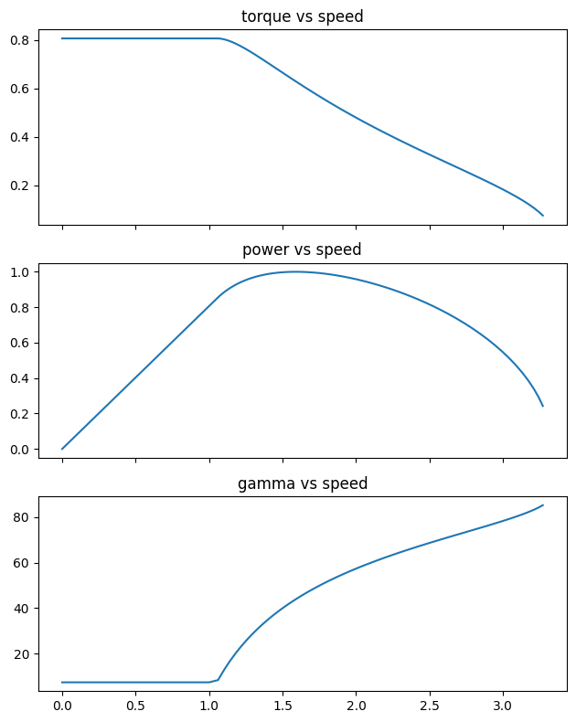
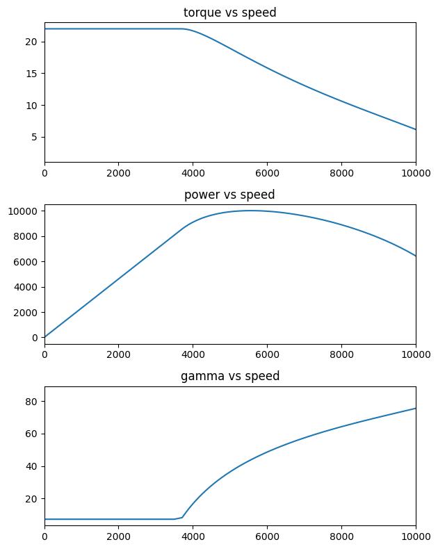

pu_pmsm
per unit equations of pmsm and their corresponding torque-speed profiles
PMSM per unit analysis
Ideal PMSM model in p.u ignoring resistance
\(V = \omega \sqrt{ (\lambda_m + L_d i_d )^2 + (L_q i_q )^2 }\)
\(T = \dfrac{3 p}{2} [\lambda_m i_q - (L_q - L_d)i_q i_d]\)
\(i_d = -I \sin(\gamma)\)
\(i_q = I \cos(\gamma)\)
\(\lambda_m = K_e\)
\(\gamma = \theta_i\)
\(\delta = \theta_v\)
SPM: theory, pu analysis and implementation
spm class provides the ideal per unit capability of the machine defined by two parameters
1. flux linkage (\(\lambda_m\)) = phi_m
2. inductance (\(L_d = L_q = L\)) = lpu
SPM achieves maximum torque per ampere with \(\gamma = 0\).
At base speed, \(V\), \(\omega\) have 1 p.u value.
Considering these SPM specific constraints at base speed, \(\lambda_m\) and \(L\) are bound by
\(1 = \sqrt{\lambda_m^2 + L^2 }\)
In this implementation, SPM machine is characterized by just \(L\) i.e \(lpu\) as input. \(\lambda_m\) is calculated using the above constraint.
spm
spm (phi_m)
Initialize self. See help(type(self)) for accurate signature.
spm.motor_puprofile
spm.motor_puprofile (gamma_limit=85)
this method calculates the per unit profile of the machine with current angle limit of 85 degrees
spm.motor_profile
spm.motor_profile (Vb, Pb, wb)
This method takes Vb, Pb, wb as the base values for line voltage, KVA rating of the machine, base speed respectively
spm.plot_puprofile
spm.plot_puprofile ()
plots the motor performance profile in p.u
spm.plot_profile
spm.plot_profile ()
plots the motor performance profile in actual values
spm class use: example
Machine profile with:
magnet flux linkage = 0.8 p.u
line-line base voltage = 42 V
base power value (available KVA) = 7000 W
base speed = 2500 rpm
M1 = spm(0.8)
M1.motor_puprofile()
M1.motor_profile(42, 7000, 2500)
M1.plot_profile()
IPM: theory, pu analysis and impelmentation
\(\eta = \dfrac{L_q}{L_d}\)
\(V = \omega \sqrt{ (\lambda_m - L_d \sin(\gamma) )^2 + (\eta L_d \cos(\gamma) )^2 }\)
\(T = \dfrac{3 p}{2} [\lambda_m \cos(\gamma) + (\eta - 1) L_d \dfrac{sin(2\gamma)}{2}]\)
- The machine should operate with maximum torque per ampere decided by the current angle \(\gamma\)
- \(\gamma\) is dependent on the values of \(\lambda_m, L_d, \eta\)
- The machine MTPA operation at base speed should achieve 1 p.u. voltage value
\(\gamma_{mtpa} = \sin^{-1} \Big[ \dfrac{ -\lambda_m + \sqrt{ \lambda_m^2 + 8xx^2} }{4xx} \Big]\) where, \(xx = L_d(\eta - 1)\). However this above expression is only valid if \(\eta > 1\)
Several possible combinations of \(\lambda_m, L_d, \eta\) can achieve given torque-speed characterisitic. To achieve ideal field weakening however, there exists a unique combination of \(\lambda_m = L_d\) and \(\eta\).
ipm
ipm (phi_m, ld)
Initialize self. See help(type(self)) for accurate signature.
ipm.motor_puprofile
ipm.motor_puprofile (gamma_limit=85)
this method calculates the per unit profile of the machine with current angle limit of 85 degrees
ipm.motor_profile
ipm.motor_profile (Vb, Pb, wb, pp=4)
This method takes Vb, Pb, wb as the base values for line voltage, KVA rating of the machine, base speed respectively
ipm.plot_puprofile
ipm.plot_puprofile ()
plots the motor performance profile in p.u
ipm.plot_profile
ipm.plot_profile ()
plots the motor performance profile in actual values
IPM class use: example
Machine profile with:
magnet flux linkage = 0.8 p.u
saliency = 2
Ld = 0.3 p.u
line-line base voltage = 42 V
base power value (available KVA) = 7000 W
base speed = 2500 rpm
# create an object of the IPM class
M2 = ipm(0.8, 0.5)
# calculate a valid saliency ratio
M2.calc_sal()
# check if the input parameters are valid
print("machine parameters validity: {}".format(M2.valid))
print("suggested machine saliency: {}".format(M2.sal))gamma = 7.297141854493766
voltage = 0.9500216228665731
sal = 1.21
machine parameters validity: 1
suggested machine saliency: 1.21M2.motor_puprofile()
M2.plot_puprofile()
M2.motor_profile(42, 10000, 3500)
print('base current: {} A rms'.format(M2.Ib))
print('max torque: {} N.m'.format(round(max(M2.values['torque']),2)))
M2.plot_profile()calculating machine parameters for pole pairs: 4
machine parameters:
{'phi_m': 0.013232281642744188, 'Ld': 4.2542057750592164e-05, 'Lq': 5.1475889878216516e-05, 'pp': 4}
base current: 194.4 A rms
max torque: 22.01 N.m
PMSM simulation
class pmsm_model():
def __init__(self, phi_m=0.8, ld=0.6, lq=0.6, vdc = 42, Iph = 250, pp = 4 ):
self.phi_m = phi_m
self.ld = ld
self.lq = lq
self.Vs = vdc
self.Is = Iph
self.pp = pp
self.speed = []
self.torque = []
self.voltage = []
self.current = []
self.gamma = []
self.power = []
self.values = dict.fromkeys(['speed', 'torque', 'power'])
self.valid = 0
self.validate_parameters()
def validate_parameters(self,):
# check if the values Lq is less than Ld
if self.lq < self.ld:
print('invalid machine parameters. Lq cannot be less than Ld')
elif self.phi_m < 0 or self.ld < 0 or self.lq <0:
print('machine parameters cannot be non positive')
elif self.pp <= 0 :
print('invalid machine parameters, pole pairs cannot be less than 1')
elif type(self.pp) != int:
print('invalid machine parameters, pole pairs have to be +ve integers')
else:
print('valid machine parameters')
self.valid = 1
def motor_profile(self,):
# check if the parameters are valid
if self.valid == 0:
self.validate_parameters()
if self.valid == 0:
print('invalid machine parameters, please recheck')
else:
gamma = np.arcsin((-self.phi_m + np.sqrt( (self.phi_m**2 + 8*(self.ld*(self.sal-1))**2 )))/(4*self.ld*(self.sal-1)))
gamma_deg = gamma*180/np.pi
speed_temp = []
voltage_temp = []
gamma_temp = []
torque_temp = []
power_temp = []
# constant torque region
o = 0
v = 0
while v < self.Vs:
v = o * np.sqrt( (self.phi_m - self.ld*np.sin(gamma))**2 + (self.sal*self.ld * np.cos(gamma))**2 )
t = self.phi_m * np.cos(gamma) + (self.sal-1)*self.ld*np.sin(2*gamma)/2
p = t*o
speed_temp.append(o)
voltage_temp.append(v)
gamma_temp.append(gamma_deg)
torque_temp.append(t)
power_temp.append(p)
o += 1
#self.speed.append(o)
#self.voltage.append(v)
#self.gamma.append(gamma_deg)
#self.torque.append(t)
#self.power.append(p)
# constant voltage region
while (gamma_deg < 90):
gamma_deg += 1
gamma = gamma_deg*np.pi/180
o = 1/np.sqrt( (self.phi_m - np.sin(gamma)*self.ld)**2 + (self.sal* self.ld * np.cos(gamma))**2 )
t = self.phi_m * np.cos(gamma) + (self.sal-1)*self.ld*np.sin(2*gamma)/2
p = t*o
speed_temp.append(o)
voltage_temp.append(v)
gamma_temp.append(gamma_deg)
torque_temp.append(t)
power_temp.append(p)
self.speed = speed_temp
self.voltage = voltage_temp
self.gamma = gamma_temp
self.torque = torque_temp
self.power = power_temp